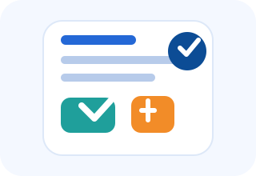

What it supports
Job capture, routing, incident notes, and completion tracking are all designed to be simple enough for use in the field and clear enough for managers to review later.

Field operations app
Designed for dispatch, incident triage, and service verification, the app makes everyday maintenance work faster, clearer, and easier to document.
Job capture, routing, incident notes, and completion tracking are all designed to be simple enough for use in the field and clear enough for managers to review later.
It complements the PrevLeak platform by turning field operations into a repeatable digital workflow for plumbers, maintenance partners, and service teams.
Clean navigation, clear status handling, and consistent actions create a dependable experience that works well on both phones and tablets.
This app is available as a browser web app while store publication is in progress. Users can open it in Chrome or Safari and add it to the home screen for app-like access.
Email verification is required before profile activation.
Strong user profiles require verified email identity and authenticated access.